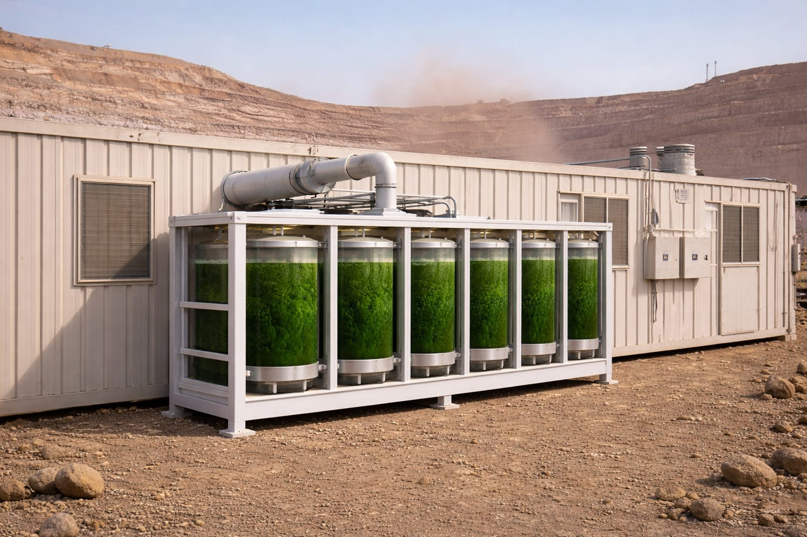

Operación
Suministro continuo con caudal regulado
Ajuste de caudal y concentración según diseño de sala.
Sistema modular de generación y manejo de oxígeno diseñado para salas de control, casinos y dormitorios en altura, integrable al sistema de ventilación existente.
A mayor altitud, menor presión parcial de oxígeno. El rendimiento cognitivo disminuye, aumentando fatiga, errores y tiempos de respuesta.
El sistema no solo genera oxígeno: la solución líquida retiene parte del material particulado fino, contribuyendo a ambientes interiores más limpios.
Sistema modular de biogeneración y manejo de oxígeno basado en microalgas fotosintéticas, diseñado para operar a la intemperie e integrarse a ventilación existente.

Protección intelectual: la tecnología Oxibat cuenta con solicitud de patente en trámite presentada ante INAPI en Chile. Esto respalda que el diseño técnico corresponde a desarrollo propio.
El objetivo es entregar una plataforma técnica que mejore ambiente y operación, con parámetros verificables.
Ajuste de caudal y concentración según diseño de sala.
Se conecta directamente a la ventilación de la faena.
Producto residual utilizable como biofertilizante.
Sensores y monitoreo para decisiones basadas en datos.
Menor dependencia de transporte de cilindros.
Diseño, construcción y soporte en Chile.
La solución líquida actúa como medio de captura de MP fino que ingresa por ventilación, contribuyendo a mejorar calidad de aire interior en salas de control, casinos y dormitorios.
Proceso claro, con decisiones técnicas verificables.
Análisis de ubicación, altitud, dependencias y restricciones.
Configuración modular + integración HVAC.
Construcción e instalación en sitio.
Ajuste fino según operación real.
Presentación breve del tipo de problema que aborda.
Ingeniero Civil Metalúrgico con sólida formación en Ingeniería Industrial. Experiencia práctica en operaciones mineras a gran altitud, donde la baja disponibilidad de oxígeno afecta la seguridad, el desempeño y la productividad del personal.
Oxibat nace desde esa realidad operacional: desarrollar una solución técnica que reduzca el impacto fisiológico de la altura y mejore las condiciones de trabajo, sin interrumpir la operación. Tecnología diseñada para proteger a las personas y asegurar continuidad operacional en entornos desafiantes.
Foco absoluto en diseño robusto, verificable y operable bajo condiciones reales de minería.
Si hay posible encaje técnico, coordinemos una reunión para revisar parámetros y requerimientos.
Atención personal, sin intermediarios.
WhatsApp · OxibatTambién puedes escribir a gian.pastorini@gmail.com.